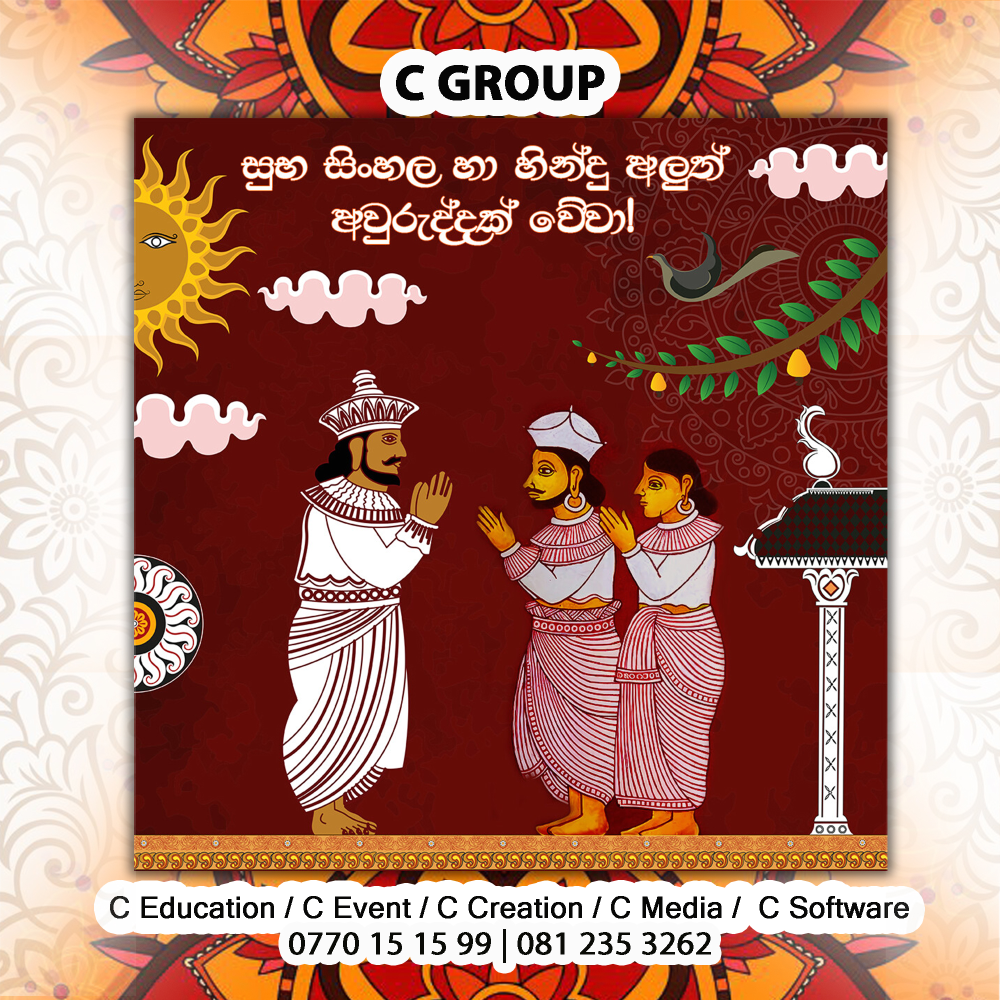

University Assignment Guidance
Academic services · Promotional creative
I create eye-catching graphic designs that help brands, businesses and ideas stand out.


A selection of promotional graphics, event artwork and digital creatives. More projects will be added as the portfolio grows.
Academic services · Promotional creative
Brand visual · Graphic design services
Seasonal campaign · Cultural design
Event promotion · Traditional illustration
Education campaign · Social media graphic
Digital advertising · Technology promotion
This portfolio is designed to grow — new work can be added to the gallery at any time.
I'm Nipun Samarakoon, a creative designer focused on making clear, engaging and memorable visual content.
I enjoy turning ideas into designs that communicate a message — from promotional posters and social media campaigns to education-focused graphics and brand visuals. I value strong composition, purposeful colour and typography that makes every design easy to understand.
Visual communication tailored to your audience, platform and purpose.
Posts, stories and campaign creatives.
Promotional, event and announcement designs.
Visual direction and brand-focused graphic assets.
Clear designs for learning and business.
I'm open to graphic design opportunities, collaborations and creative projects. Reach out and let's talk.